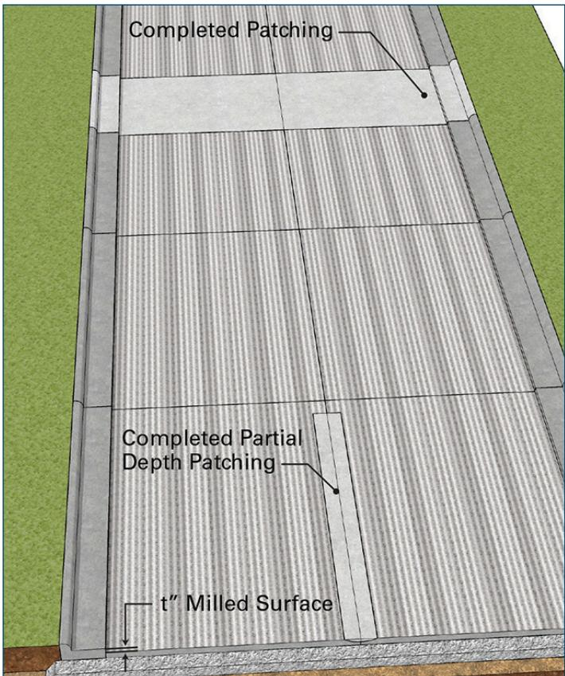
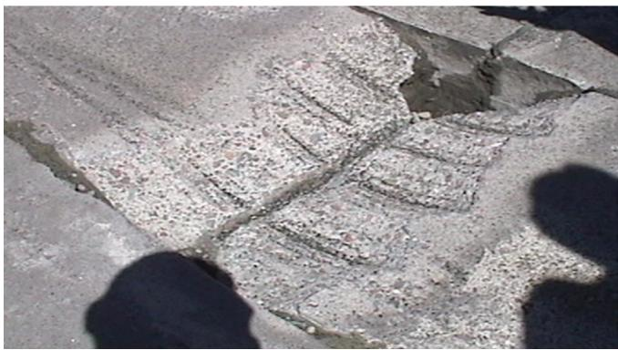
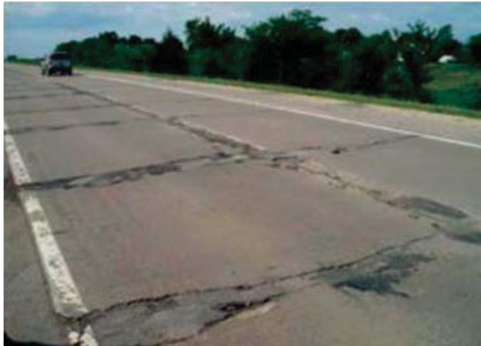
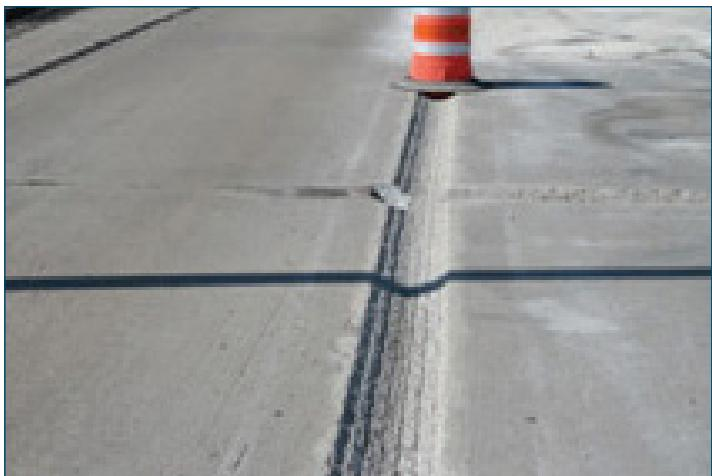
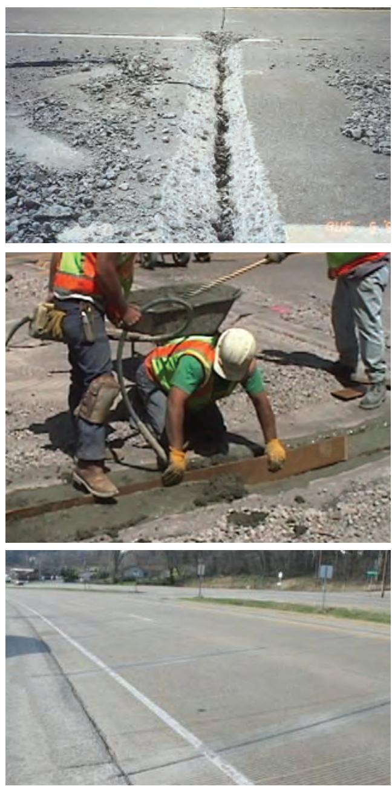
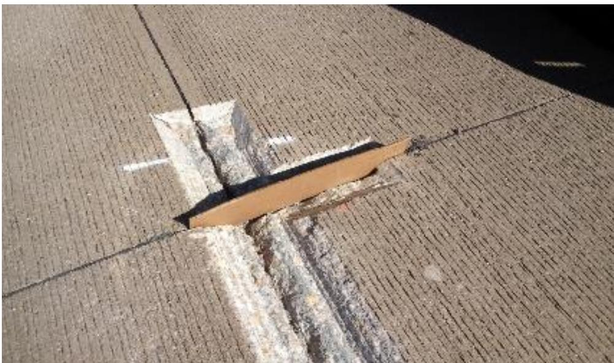
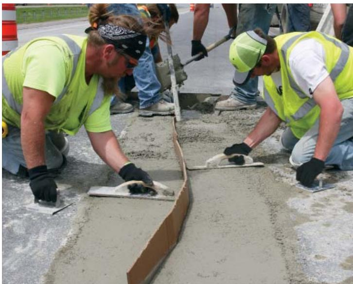
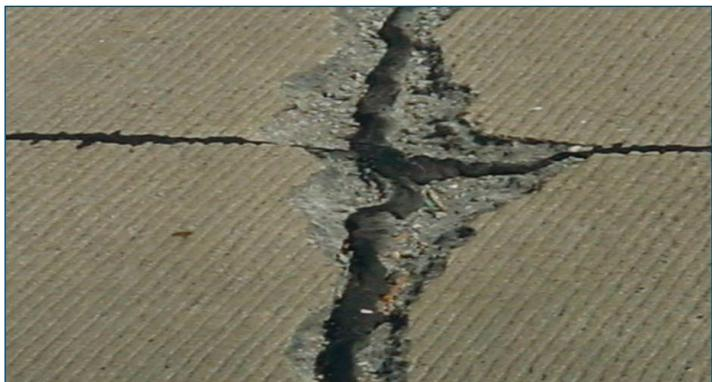

Partial-Depth Repair (PDR) Technique
Partial‑Depth Repair (PDR) is a targeted rehabilitation method used when concrete pavement distress—typically spalling or delamination at joints and cracks—is confined to the shallow, upper portion of the slab, generally no deeper than the top one‑third to one‑half of its thickness [1][4][6]. The technique restores ride quality and joint sealing by removing the deteriorated concrete with partial‑depth saw cuts or milling until sound substrate is exposed, inserting a compressible filler, applying a bonding grout while it remains wet, and placing a compatible cementitious patch that is cured according to manufacturer specifications [1][5][8]. When applied within prescribed width thresholds (≈1 in. to the joint face for early treatment or ≈2 in. for immediate action) and when underlying concrete remains sound, a properly executed PDR can extend the service life of the repaired area by ten to fifteen years [1][9].
Sources (12)
Purpose and treatment objectives
Partial‑Depth Repair is employed when concrete pavements show shallow, localized distress—most often spalling or delamination at joints and cracks—that is confined to the upper portion of the slab. The damage must be limited to roughly the top one‑third of the pavement thickness (newer milling equipment can extend repairs to about half depth). When spalling reaches approximately 1 in. measured from the joint face (≈2 in. total width) it should be repaired promptly; if it widens to about 2 in. from the face (≈4 in. total), immediate PDR is required, provided the deterioration has not penetrated beyond the top half of the slab. This distress degrades ride quality, generates noise, and compromises joint function, typically arising from infiltration of incompressible material, poor concrete consolidation, weak zones, corrosion of reinforcement or joint inserts, or inadequate air‑entrainment. By removing the deteriorated concrete to sound substrate and placing a compatible patch, PDR restores smoothness, reestablishes a uniform joint reservoir before resealing, and extends the service life of the pavement. [1][4][6][8][9][12]
The figure below illustrates how to construct partial- or full-depth repairs in isolated areas where joint deterioration is excessive.

Illustration of partial- and full-depth repairs in isolated areas where joint deterioration is excessive. [12]The figure displays a concrete pavement section featuring longitudinal milling marks labeled as a “t” Milled Surface, indicating the removal of material to prepare for an overlay or repair. It visually distinguishes between two types of rehabilitation: a wide strip at the top labeled “Completed Patching” and a narrower vertical strip labeled “Completed Partial Depth Patching.”
[1] — Ch. 5 (p. 28); [4] — Partial-Depth Repairs (p. 75); [6] — Ch. 6 (pp. 68–69); [8] — Ch. 3 (p. 75), Ch. 4 (p. 94), Ch. 18 (pp. 374–401); [9] — Ch. 5 (p. 99); [12] — 2. Overview of Thin Concrete O… (pp. 32–33)
The Partial‑Depth Repair (PDR) technique is employed to remove shallow, deteriorated concrete at spalled or delaminated joints and replace it with a compatible material. Across the guides the primary objective is to repair the damaged area and return the pavement to its intended functional performance—restoring ride quality, joint sealing, and overall integrity. While several sources note that successful repairs can add ten to fifteen years of usable life, this extension is described as a secondary benefit rather than the main purpose; none of the guides cite prevention of future deterioration or slowing of existing decay as the chief aim. [1][4][6][8][9][12]
The figure below illustrates the removal of damaged concrete during this process.

Partial-depth repair of concrete pavement showing milled-out material at a joint. [6]The image displays a section of concrete pavement where the surface layer has been removed to expose the underlying aggregate, creating a rough, textured patch adjacent to a saw cut.
[1] — Ch. 5 (p. 28); [4] — Partial-Depth Repairs (p. 75); [6] — Ch. 6 (pp. 68–69); [8] — Ch. 3 (p. 75), Ch. 4 (p. 94), Ch. 18 (pp. 374–401); [9] — Ch. 5 (p. 99); [12] — 2. Overview of Thin Concrete O… (pp. 32–33)
Distress characterization and causes
The distress targeted by partial‑depth repair is surface spalling or delamination that occurs at concrete joints or overlay panels. It is located “in the vicinity of joints” and “at spalled or distressed joints,” typically confined to the upper one‑third to one‑half of the slab (“Partial-depth repairs should be in the top half of the pavement depth…”, “Even at low severity levels, cores should be taken to ensure that the deterioration is limited to the top one‑third to one‑half of the pavement thickness.”). The extent is limited to small, shallow zones: “removal and replacement of small, shallow areas of deteriorated concrete pavement at spalled or distressed joints” with depth rarely beyond “one-third of the depth of the slab” (though modern milling can reach “T/2”). Width thresholds guide timing – early action when spalling reaches a width of 1 in. to the face (2 in. total) and immediate repair at 2 in. to the face (4 in. total). Severity ranges from moderate, causing “ride and noise problems for the traveling public” and loss of joint sealing, to severe when panels are “shattered” or exhibit movement, indicating loss of support. Progression is variable: some cases show rapid spread within five‑to‑ten years (“After only 10 years… progressed to the point that extensive partial-depth patches were required”), while other sources do not quantify a rate. Safety and operational consequences include degraded ride quality, audible noise from open joints (“noise began to radiate from the joints as traffic passed over them”), potential damage to adjacent pavement structures, and in extreme cases compromised load‑bearing capacity; however, when addressed promptly repairs “restore the overall integrity of the pavement and improve its ride quality” and can provide service lives of 10–20 years. [1][4][6][7][9][12]
The figure below illustrates a concrete pavement exhibiting severe joint spalling.

Concrete pavement with severe joint spalling (photo courtesy of Todd LaTorella, MO/KS ACPA) [1]The image displays a concrete highway surface exhibiting extensive deterioration along the longitudinal joints.
[1] — Ch. 5 (p. 28); [4] — Partial-Depth Repairs (p. 75); [6] — Ch. 6 (pp. 68–69); [7] — Removal Depth (pp. 27–28); [9] — Ch. 5 (p. 99); [12] — 2. Overview of Thin Concrete O… (pp. 32–33)
The guides identify several interrelated mechanisms that initiate or accelerate the distress addressed by partial‑depth repair. Water entering the joint and remaining trapped creates saturated conditions that, when combined with an inadequate concrete air‑void system, promote freeze‑thaw damage and spalling of the surface. In addition, loss of bond between the patch and existing concrete when the bonding grout is placed too early or begins to dry before the overlay is applied leads to premature debonding of the repair. A further driver is loss of structural support beneath the overlay, often caused by thin sections or a broken bond between the new concrete and the existing pavement, which can cause panel shattering or movement. Material aging that results in poor distribution of entrained air bubbles and reduced entrained‑air content reduces durability, making the slab more vulnerable to moisture ingress, freeze‑thaw cycles, and temperature‑induced joint opening/closing. Complementary factors cited across the sources include poor concrete consolidation, localized weak zones, corrosion of reinforcing steel, joint inserts that exacerbate cracking, mechanical disturbance from cold milling, and traffic loading that pinches weakened concrete. Together these mechanisms undermine the bond line and the supporting capacity of the underlying slab, necessitating targeted removal of the deteriorated layer through partial‑depth repair. [1][5][6][7][8][9][12]
[1] — Ch. 5 (p. 28); [5] — Debonding of Patch (p. 35); [6] — Ch. 6 (pp. 68–69); [7] — Removal Depth (pp. 27–28); [8] — Ch. 18 (p. 401); [9] — Ch. 9 (p. 229); [12] — 2. Overview of Thin Concrete O… (pp. 32–33)
Applicability and treatment selection
Partial‑depth repair is appropriate when distress is confined to the upper portion of a concrete slab—generally within the top half of the pavement depth and often described as the top one‑third of the slab. The visible spall or crack should be up to about 1 in. measured from the face of the joint (no more than 2 in. total), with wider spalls (≈2 in. face or ≤4 in. total) also qualifying for immediate repair provided the joint can be drained. The method is suited to pavements that have reached at least seven years of service and exhibit surface‑level distress near joints caused by infiltration of incompressible material, joint displacement that “pinch” the concrete, poor consolidation, localized weak concrete, corrosion of reinforcement, or problematic joint inserts. Traffic conditions that generate joint movement and pinching are a key trigger. Environmental conditions include temperature‑driven joint closure in warm periods; in cold‑weather regions the joint should be drained, backer rods removed, and the saw cut filled, while cooler weather may require protective curing measures. Site considerations encompass locations where the lower slab and subbase remain sound—allowing removal of only the deteriorated top three to four inches and placement of a thin unbonded overlay without altering profile grade; urban projects that employ a geotextile separation layer limit ridge height to no more than ¼ in., and the technique can maintain two‑lane traffic during construction. [1][6][12]
The figure below illustrates a milled joint prepared for repair prior to placing a bonded overlay.

Milled joint for repair prior to placing bonded overlay (Photo courtesy of Kevin McMullen, Wisconsin Concrete Pavement Association) [12]The image displays a concrete pavement surface featuring a longitudinal saw cut that has been milled or ground out along the joint face. A traffic cone is positioned at the top of the repair area, indicating an active work zone. This figure illustrates a localized joint deterioration repair where the deteriorated concrete has been removed to expose sound substrate, consistent with the partial-depth repair technique used when distress is confined to the upper portion of the slab.
[1] — Ch. 5 (p. 28); [6] — Ch. 6 (pp. 68–69); [12] — 2. Overview of Thin Concrete O… (pp. 32–33)
Partial-depth repair is unsuitable whenever the concrete distress exceeds the shallow zone for which the method was designed. This includes any spalling or delamination that penetrates beyond the upper half of the slab—or deeper than roughly one‑third to one‑half of its thickness—so that a full‑depth intervention becomes necessary. The technique also fails when the damaged area is large, progressive, or located outside the typical longitudinal lane‑shoulder joint spall locations, because the limited repair depth cannot achieve reliable bond and may allow deterioration to spread beyond the patched zone. Early‑age pavements (under seven years) that exhibit flaking joint mortar combined with a poor air‑void system that cannot be drained likewise preclude PDR use; full‑depth repair is required in such cases. Additionally, if any load‑transfer devices at the joints are not fully functional, or if the project cannot guarantee strict quality‑control procedures for removal, preparation, placement, and curing, another rehabilitation method—such as full‑depth replacement, rubblizing, milling with a thin unbonded overlay, or panel replacement—should be selected. Finally, when joint deterioration becomes widespread and adjacent slabs continue to crack despite isolated patches, the limited scope of PDR is insufficient and a more extensive treatment must be employed. [1][4][8][9][12]
[1] — Ch. 5 (p. 28); [4] — Partial-Depth Repairs (p. 75); [8] — Ch. 3 (p. 75), Ch. 4 (p. 94), Ch. 18 (p. 374); [9] — Ch. 5 (p. 99); [12] — 2. Overview of Thin Concrete O… (pp. 32–33)
Condition assessment and timing
The determination of whether a partial‑depth repair is required begins with a systematic visual survey of joints and overlay panels. Inspectors look for the characteristic shadowing that appears on either side of a joint before any concrete loss becomes visible, which signals early joint damage. Where spalling or other localized distress is observed, its lateral extent is measured; if the width to the face of the joint reaches about 1 in (or up to 2 in total) the area should be sealed and scheduled for PDR within a two‑year window, while widths of 2 in (4 in total) trigger immediate repair. The depth of the loss is then verified—typically it must not exceed roughly one‑third of the slab thickness (or up to half when a U‑mill can be employed). To confirm that deterioration is confined to the upper portion of the pavement, cores are extracted and examined in the laboratory; the cores establish whether the damaged zone is limited to the top one‑third to one‑half of the concrete thickness. Finally, any load‑transfer devices present at the joint are inspected for full functionality before proceeding with the repair. [1][4][7][8][12]
[1] — Ch. 5 (p. 28); [4] — Partial-Depth Repairs (p. 75); [7] — Removal Depth (pp. 27–28); [8] — Ch. 3 (p. 75); [12] — 2. Overview of Thin Concrete O… (pp. 32–33)
Partial‑Depth Repair is recommended when concrete distress is shallow, localized, and confined to the upper portion of the slab—generally not deeper than the top one‑third to one‑half of the pavement thickness. The condition most commonly triggering a PDR is spalling at joints that has progressed only through this surface layer. When the spall measures about 1 in. from the face of the joint (or up to 2 in. total width) and cores confirm that damage does not exceed roughly the top one‑third to one‑half of the slab, the repair should be placed within a two‑year window; if the spall widens to about 2 in. from the face (no more than 4 in. total), immediate PDR is required provided the deterioration has not penetrated beyond the top half depth. In cases where joint distress becomes extensive but remains limited to the upper few inches—such as after ten years of service with widespread joint spalling—a partial‑depth removal of the deteriorated surface (e.g., the upper 4 in.) and placement of a thin overlay can be employed instead of full‑depth reconstruction. The technique is also appropriate for surface distress caused by poor consolidation, localized weak zones, corrosion of reinforcement, or weakened joint inserts, provided the underlying concrete remains sound and load‑transfer devices continue to function. [1][4][6][8][9][12]
The figure below illustrates the partial-depth repair process at a joint.

Partial-depth repair process at joint [4]The figure displays a sequence of images illustrating the rehabilitation of concrete pavement distress. The top panel shows a longitudinal joint with significant spalling and deterioration along the edges, which is the condition targeted by partial-depth repair techniques. The middle panel depicts workers actively performing the repair by placing fresh material into a prepared trench along the joint face.
[1] — Ch. 5 (p. 28); [4] — Partial-Depth Repairs (p. 75); [6] — Ch. 6 (pp. 68–69); [8] — Ch. 3 (p. 75), Ch. 4 (p. 94), Ch. 18 (pp. 374–401); [9] — Ch. 5 (p. 99); [12] — 2. Overview of Thin Concrete O… (pp. 32–33)
Materials and repair details
The PDR technique calls for shallow removal of spalled concrete at joints, defining repair boundaries with partial‑depth saw cuts and extracting the deteriorated material by sawing, chipping or milling until sound concrete is exposed. The depth is limited to the upper one‑third to one‑half of the slab thickness—commonly described as the top half of the pavement—to provide a service life of ten to fifteen years. When spalling reaches about 1 in from the joint face (or up to 2 in total width) the void is first filled with an asphalt‑rubber sealant; larger spalls (~2 in from the face, up to 4 in total) require immediate repair. After removal, the exposed surface is sand‑ or air‑blasted, a compressible backer material is placed in the joint, and a bonding grout or agent is applied immediately; any sign of grout drying (white appearance) must be sand‑blasted and reapplied before the patch. The patch may be a Portland‑cement based high‑performance concrete, a rapid‑setting cementitious/polymeric mix, or another manufacturer‑specified product, placed per the supplier’s instructions and followed by curing with a white pigmented membrane compound (blankets in cold weather). In some projects a thin geotextile fabric is installed as a separation layer before placing an unbonded overlay. The repair is completed with strict adherence to removal, preparation, placement, and curing procedures, preserving functional load‑transfer devices and joint spacing (e.g., ~5 ft on center for overlays). [1][4][5][6][8][9][12]
The figure below illustrates the partial-depth repair technique described above.

Partial-depth repair (PDR) of a concrete pavement joint. [8]The image displays a longitudinal view of a concrete pavement surface featuring a saw-cut joint that has been partially repaired. A rectangular patch, appearing to be made of wood or cardboard, is inserted into the joint gap as a compressible filler material. The surrounding concrete surface exhibits transverse grooves consistent with texturing applied for skid resistance.
[1] — Ch. 5 (p. 28); [4] — Partial-Depth Repairs (p. 75); [5] — Debonding of Patch (p. 35); [6] — Ch. 6 (pp. 68–69); [8] — Ch. 4 (p. 94), Ch. 18 (p. 401); [9] — Ch. 5 (p. 99); [12] — 2. Overview of Thin Concrete O… (pp. 32–33)
Partial‑depth repairs are limited to the upper half of the pavement thickness and are intended to last about ten to fifteen years; they perform best when concrete distress is confined to the top one‑third of the slab or, with modern “U” milling, up to half depth. The technique is only suitable when delamination is shallow—generally less than about one‑third of the slab’s thickness and clearly defined—and spalling widths greater than about one inch to two inches (face) or up to four inches total trigger immediate PDR, while wider or deeper damage exceeds the method’s scope. Existing pavement conditions that must be met include sound concrete beneath the removed layer, functional load‑transfer devices, drainable joints, and an acceptable air‑void system; if the air‑void system is poor and it is not possible to drain the saturated joints, then a PDR is not appropriate. Preparation requires removal of distressed concrete by sawing, chipping, and/or milling until sound concrete is exposed, insertion of a compressible filler in the joint to prevent intrusion of repair material, and strict control of ridge height (not exceeding ¼ in. when a geotextile separation layer is present). The new patch must be compatible with the existing substrate—rapid‑setting or polymeric mixes are used for quick traffic return, while long‑lasting, durable repairs have been created using portland cement‑based products with adequate air entrainment, reduced permeability, and supplemental slag. Bonding grout must remain wet at placement; any drying sign such as a white color requires sand‑blasting and re‑application, because debonding may occur if the bonding grout is placed too early. When these material properties, compatibility requirements, and pavement‑condition criteria are satisfied and installation follows strict removal, preparation, placement, and curing procedures, service lives of ten to twenty years or more can be achieved. [1][4][5][6][7][8][9][12]
The following figure illustrates a joint board used during the preparation phase of the repair.
 Installation of a joint board in a partial-depth repair. [1]
Installation of a joint board in a partial-depth repair. [1]
The image shows a longitudinal saw cut in concrete pavement where a brown, corrugated compressible filler has been inserted into the gap.
[1] — Ch. 5 (p. 28); [4] — Partial-Depth Repairs (p. 75); [5] — Debonding of Patch (p. 35); [6] — Ch. 6 (pp. 68–69); [7] — Removal Depth (pp. 27–28); [8] — Ch. 3 (p. 75), Ch. 4 (p. 94), Ch. 18 (pp. 374–401); [9] — Ch. 5 (p. 99); [12] — 2. Overview of Thin Concrete O… (pp. 32–33)
Treatment procedures
Preparation begins with confirming that any load‑transfer devices are fully functional and that the joint is drained, any backer rod removed, and the saw cut filled. Cores are taken from representative areas to locate weakened layers or loss of adhesion; when spalling reaches a width of 1 in. measured to the face of the joint or no more than 2 in. total width, the spall is filled with an asphalt‑rubber sealant and the repair should be completed as soon as possible, preferably within two years. Repair boundaries are determined, ensuring that all the deteriorated/delaminated concrete is identified for removal, and utilities such as manholes and inlet structures are cleared to below the intended milling depth. The damaged concrete is removed by making partial‑depth saw cuts along the marked boundaries and using sawing, chipping, lightweight jack hammers or modern milling equipment until sound concrete is exposed; a uniform four‑inch depth may be milled while controlling ridge height to no more than one‑quarter inch. After removal, the substrate is cleaned with sand‑blasting or air‑blasting. The adjacent joint is prepared by inserting a compressible filler to keep repair mix out of the joint. For some repair materials, bonding grout/agent must be applied immediately prior to placement of the repair material; if the bonding grout shows any signs of drying, such as a white color, it must be sand‑blasted and re‑done to avoid debonding. The patch material is placed in a single pour according to the manufacturer’s instructions, often over a geotextile fabric separation layer when an unbonded overlay is required, and the surface texture is restored. Finally, curing is carried out for the specified period using a white pigmented membrane curing compound, with blankets added in cooler weather, or per the recommendations specific for the patch material used. [1][4][5][6][7][12]
The figure below illustrates the final finishing step of this process, showing troweling toward the edge of the repair.

Workers smoothing the surface of a concrete patch. [5]The image shows two workers in high-visibility vests kneeling on a roadway, using hand trowels to smooth and finish wet concrete within a defined area.
[1] — Ch. 5 (p. 28); [4] — Partial-Depth Repairs (p. 75); [5] — Debonding of Patch (p. 35); [6] — Ch. 6 (pp. 68–69); [7] — Removal Depth (pp. 27–28); [12] — 2. Overview of Thin Concrete O… (pp. 32–33)
Implementation of a partial‑depth repair requires milling equipment capable of precise depth control; machines equipped with automatic grade‑control or ultrasonic sensors can adjust the cut based on a digital terrain model, while fresh, unworn cutting teeth are essential for consistent removal. Prior to milling, any joint drainage issues must be resolved in cold‑weather areas—draining the joint, removing backer rod, and filling saw cuts—to prevent moisture‑related failures. The repair proceeds through a defined sequence: first clearing utilities such as manholes below the intended depth, then performing controlled 4‑inch milling, followed by removal of curbs and gutters, execution of minimal pre‑overlay repairs, utility adjustments, placement of geotextile separation fabric, overlay placement, joint spacing, new curb construction, and final markings. Throughout construction traffic flow is limited to a two‑way, two‑lane configuration to protect the work area while allowing continued movement. [1][4][5][6][7][12]
[1] — Ch. 5 (p. 28); [4] — Partial-Depth Repairs (p. 75); [5] — Debonding of Patch (p. 35); [6] — Ch. 6 (pp. 68–69); [7] — Depth Control (p. 42); [12] — 2. Overview of Thin Concrete O… (pp. 32–33)
Quality and workmanship
The inspection protocol for a Partial‑Depth Repair (PDR) addresses four stages—materials, preparation, installation, and post‑completion verification.
Materials – Inspectors must confirm that the bonding grout remains wet; any indication of drying such as “a white color” triggers sand‑blasting and re‑application. The fresh concrete mix is checked for the “optimized ‘durable’ concrete mixture” with required air‑entrainment and low permeability, and the geotextile separator is examined for damage, noting that it serves as a “geotextile fabric as a separation layer.”
Preparation – Prior to work the joint must be ready: “In cold‑weather states, it is recommended that the joint be drained, any backer rod removed, and the saw cut filled.” Load‑transfer devices, if present, are verified to be functional (“load transfer devices, if present, should be fully functional”). All deteriorated concrete is removed by sawing, chipping or milling until sound substrate is exposed (“removal of distressed concrete by sawing, chipping, and/or milling until sound concrete is exposed”), and the milled surface ridge height is measured to ensure it does not exceed “¼ in.”
Installation – The bonding grout must be placed before the patch; the concrete patch is installed immediately after grout placement (“Repair material is then applied and the surface texture restored”). Surface texture and profile are checked against design requirements, and curing follows the specific guidance for the patch material (“curing should be conducted per the recommendations specific for the patch material used”).
Completed work – After placement cores are taken to verify that deterioration is limited to the top one‑third to one‑half of the pavement thickness. The repaired area is monitored for early debonding, typically within the first thirty days, and the overall joint spacing and profile grade are compared with design tolerances. Repairs should be executed within a two‑year window from spall detection. [1][4][5][12]
[1] — Ch. 5 (p. 28); [4] — Partial-Depth Repairs (p. 75); [5] — Debonding of Patch (p. 35); [12] — 2. Overview of Thin Concrete O… (pp. 32–33)
The combined criteria define a satisfactory PDR as one that (a) removes deteriorated concrete only within the upper portion of the slab—“Partial‑depth repairs should be in the top half of the pavement depth to achieve the intended service life of 10 to 15 years”—and verifies through coring that “the deterioration is limited to the top one‑third to one‑half of the pavement thickness.” (b) ensures that the bonding grout remains moist; any early drying such as a white surface requires immediate sandblasting—“If the bonding grout shows any signs of drying, such as a white color, it must be sand blasted and re‑done.” (c) controls milling so that the resulting ridge does not exceed the specified limit—“The maximum ridge height of the milled surface could not exceed ¼ in.” When these tolerances are met, load‑transfer devices remain functional, spall dimensions stay below the one‑ to two‑inch thresholds noted elsewhere, and the repair is expected to perform for ten to fifteen years. [1][4][5][7][8][12]
[1] — Ch. 5 (p. 28); [4] — Partial-Depth Repairs (p. 75); [5] — Debonding of Patch (p. 35); [7] — Removal Depth (pp. 27–28); [8] — Ch. 18 (p. 374); [12] — 2. Overview of Thin Concrete O… (pp. 32–33)
Performance and service life
Partial‑depth repair restores pavement condition by promptly filling spalls that are confined to the shallow portion of a slab and resealing joints, thereby improving ride quality and load transfer. When the damage is limited to the top half (or roughly the upper one‑third to one‑half) of the concrete and the repair is initiated within the prescribed width thresholds—about 1 in. face or 2 in. total for early treatment and up to 2 in. face or 4 in. total for immediate action—the technique can provide a durable solution that typically lasts ten to fifteen years, and with optimal materials and construction practices even ten to twenty years. The effectiveness of the repair hinges on strict adherence to the preparation‑placement‑curing sequence: removal of the deteriorated concrete by saw cuts or modern milling, sand‑ and air‑blasting of the substrate, installation of a compressible joint filler, application of any required bonding agent, immediate placement of the patch material, and curing per manufacturer specifications. Proper timing is critical; if the bonding grout dries before the patch is placed, debonding can occur and early failures are common, which is why many jurisdictions require a 30‑day warranty to capture such defects. Portland‑cement‑based mixes yield long‑lasting repairs, while fast‑opening proprietary cementitious or polymeric products are used when opening time must be under about twelve hours. Because the method only addresses distress confined to the shallow portion of the slab, its durability is limited—distress often propagates beyond the repaired perimeter, making PDR an effective short‑term fix that restores functionality locally but does not fully arrest ongoing deterioration. Consequently, while patched areas regain structural integrity and ride quality, adjacent pavement may continue to degrade, leading designers to later employ full‑depth or overlay solutions for a more durable, extended service life. [1][5][6][8][9][12]
The figure below illustrates the proper placement of grout at the edge of a partial-depth repair.
 Application of bonding grout and placement of patch material during partial-depth repair. [5]
Application of bonding grout and placement of patch material during partial-depth repair. [5]
The image displays a worker using a trowel to apply a wet cementitious mixture into a prepared groove in the concrete pavement, while another individual uses a broom to spread liquid bonding grout along the adjacent surface.
[1] — Ch. 5 (p. 28); [5] — Debonding of Patch (p. 35); [6] — Ch. 6 (pp. 68–69); [8] — Ch. 4 (p. 94); [9] — Ch. 5 (p. 99); [12] — 2. Overview of Thin Concrete O… (pp. 32–33)
Across the guides, partial‑depth repairs are described as a short‑term solution that works only when the distress is confined to the upper portion of the slab. They must be limited to roughly the top half of the pavement depth; otherwise the intended service life of ten to fifteen years cannot be achieved. The most frequently reported treatment failures include early debonding of the repair patch, delamination of an overlay, localized panel distress such as shattered panels or visible movement, and continued deterioration adjacent to the repaired area (including new joint spalling, random cracking and audible joint noise). These distresses develop when several factors are present: the original damage exceeds the depth that a surface‑only repair can address; the air‑void system in the slab is poor or saturated joints cannot be drained; bonding grout is placed too early or dries before the concrete mix is applied; removal depths do not reach the weakened material or underlying pavement, leaving insufficient support for an overlay; and inherent weaknesses such as poor concrete consolidation, corrosion of reinforcement, joint inserts, traffic‑induced pinching, low air entrainment and freeze‑thaw susceptibility are not mitigated. When any of these conditions exist, the repaired zone is prone to debonding, delamination or panel failure, and the surrounding pavement continues to deteriorate despite a correctly executed patch. [1][5][6][7][8][12]
[1] — Ch. 5 (p. 28); [5] — Debonding of Patch (p. 35); [6] — Ch. 6 (pp. 68–69); [7] — Removal Depth (pp. 27–28); [8] — Ch. 4 (p. 94), Ch. 18 (p. 401); [12] — 2. Overview of Thin Concrete O… (pp. 32–33)
Monitoring and follow-up
After a partial‑depth repair is placed, the repaired zone should be inspected during the warranty period—typically the first thirty days of service—to detect any debonding. Inspectors watch for signs that the bonding grout has dried, such as a white discoloration, and verify that the patch material was applied immediately after the grout. If any drying or loss of bond is observed, the area must be sand‑blasted and the repair redone. [5]
The figure below illustrates a close-up view of a debonded area at the end of a Type 2A partial-depth repair.
 Close up of debonded area at end of a Type 2A partialdepth repair [5]
Close up of debonded area at end of a Type 2A partialdepth repair [5]
The image displays the edge of a concrete pavement where a rectangular patch has been installed. At the interface between the new material and the existing slab, there is visible separation and voiding along the cut line.
[5] — Debonding of Patch (p. 35)
The guides note that “When spalling starts to occur and reaches a width of 1 in. measured to the face of the joint or no more than 2 in. total width … the spall should be filled with an asphalt rubber sealant and a PDR should be completed as soon as possible, preferably within a two-year window,” and that “When spalling reaches a width of 2 in. measured to the face of the joint or no more than 4 in. total width, the severity has reached a point requiring immediate PDR.” They further state that “If measurable spalling is evident in pavements less than seven years old and the concrete mortar in the joints shows evidence of flaking … If the air‑void system is poor and it is not possible to drain the saturated joints, then a PDR is not appropriate,” and that “If spalling has extended below the limits of PDR, however, FDRs are required.” The effectiveness of a PDR is “limited to smaller areas where the deterioration is confined to the upper one‑third to one‑half of the concrete slab.”
Early failure of the repair is signaled when “Debonding of partial‑depth repair may occur if the bonding grout is placed too early” and when “If the bonding grout shows any signs of drying, such as a white color, it must be sand blasted and re‑done.”
Overlay distress is identified by statements such as “If a few panels in a long length of overlay are distressed, it is likely that a removal depth equal to the nominal overlay thickness will be sufficient,” “If an overlay panel is shattered, it is likely because the overlay has lost support from the underlying pavement,” and “If panel movement is evident, a removal depth to the bottom of the existing pavement is recommended.”
When distress spreads beyond the patch, the guides warn that “progressive nature of the distress in which deterioration can continue develop beyond the boundaries of the patch” and that such progressive damage may only be a short‑term solution until “they may serve as effective short‑term solutions until more substantial rehabilitation can be programmed.”
Long‑term trends observed after about ten years include “After only 10 years (2005), joint deterioration was widespread and had progressed to the point that extensive partial‑depth patches were required,” “While the partial‑depth patches performed well, the pavement adjacent to the patches continued to deteriorate, and further distress developed at the lane/curb joint and around random cracks,” and “The cores revealed that the upper 3 in. of the existing pavement had a poor distribution of entrained air bubbles and reduced entrained‑air content.” These conditions indicate that the PDR area has exceeded its service life and additional maintenance, more extensive partial‑depth repair, or full rehabilitation is required. [1][5][7][8][12]
The following figure illustrates the condition of deteriorated joints that necessitated such repairs.

Deteriorated concrete pavement joint showing extensive spalling and cracking. [12]The image displays a close-up view of a concrete pavement surface featuring a prominent longitudinal crack intersected by a transverse joint. At the intersection, there is significant material loss and crumbling along the edges of the joint, exposing the rougher interior texture of the concrete slab. This visual evidence of widespread deterioration at the joints corresponds to the condition where partial-depth patching was required after ten years.
[1] — Ch. 5 (p. 28); [5] — Debonding of Patch (p. 35); [7] — Removal Depth (pp. 27–28); [8] — Ch. 4 (p. 94); [12] — 2. Overview of Thin Concrete O… (pp. 32–33)